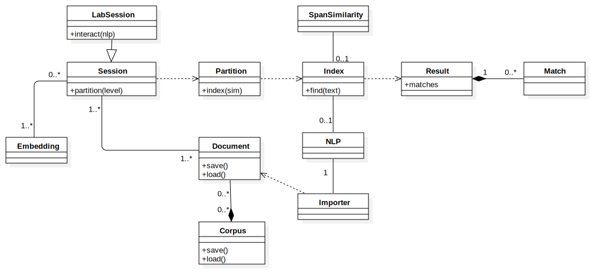
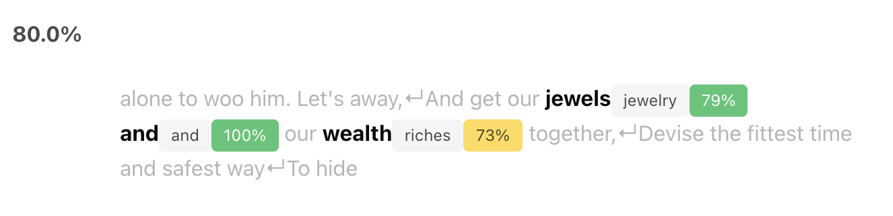

Introduction
Overview
The following (simplified) diagram shows an overview of the most important classes and concepts of the Vectorian that you need to understand in order to perform searches over collections of texts. We will go through individual concepts in more detail later, but let us first get an understanding of how different concepts relate.

In most abstract terms, to perform a search in the Vectorian you need to (refer to the diagram above):
- create a
SessionfromEmbeddings andDocuments - create an
Indexfrom theSessionthrough specifying aPartition - perform a search on the
Indexto getResults andMatches
Creating a Session
- create one or multiple
Embeddings you want to work with. This boils down to choosing which embedding(s) you want to base your token similarity computations on. See Embeddings for more details. - import (or load) one or multiple
Documents that contain the text you want to search over.Documents in the Vectorian are created using different kinds ofImporters (these perform parsing tasks using a spaCyNLPclass). See Documents for more details. - create a
Sessionthat bundlesEmbeddings andDocuments in a way that allows searches. See Sessions for more details.
Creating an Index
- from your
Session, create aPartition- which specifies howDocuments should be split into searchable units, e.g. sentences. See Documents for more details. - create a
SpanSimilaritythat models the approach to compare document spans. See Span Similarity for more details. - from
PartitionandSpanSimilarity, create anIndex- which specifies the strategy, i.e. algorithm, we employ for searching. See Index for more details. - perform a search on that
Index(using a query text) - retrieve the
Resultand theMatches for that search
Code Example
We now present a series of concrete code examples that illustrate the steps described above.
Prepare by importing the vectorian module:
import vectorian
Now create an Embedding. We choose the 50-dimensional
variant of the pretrained GloVe 6B (see https://nlp.stanford.edu/projects/glove/):
glove = vectorian.embeddings.PretrainedGloVe('6B', ndims=50)
To turn an English text string into a Document, we first need an English
text parser. From this, we can create a StringImporter:
import spacy
nlp = spacy.load("en_core_web_sm")
im = vectorian.importers.StringImporter(nlp)
We can now create a Document from a string:
doc = im("""
He'll go along o'er the wide world with me;
Leave me alone to woo him. Let's away,
And get our jewels and our wealth together,
Devise the fittest time and safest way
To hide us from pursuit that will be made
After my flight. Now go we in content
To liberty and not to banishment.
""") # Celia in "As You Like It"
The next piece of code creates a LabSession that brings together
the Documents we want to search over (doc in our case) and the
embeddings we want to employ.
vectorian.session.LabSession which is a special
kind of Session suited for running inside Jupyter. If not
running inside Jupyter, you might want to use
vectorian.session.Session.`
session = vectorian.session.LabSession(
[doc],
embeddings=[glove],
normalizers="default")
Now we create a SpanFlowSimilarity, which
is a special form of SpanSimilarity that allows us to
specify the Waterman-Smith-Beyer alignment algorithm.
Note that we base this alignment on a concept of token similarity
that is computed through the the cosine similarity over the GloVe
embedding we specified earlier.
token_similarity = vectorian.similarity.TokenSimilarity(
glove,
vectorian.similarity.CosineSimilarity())
span_similarity = vectorian.similarity.SpanFlowSimilarity(
token_sim=token_similarity,
flow_strategy=vectorian.alignment.WatermanSmithBeyer(
gap=vectorian.alignment.ExponentialGapCost(5),
zero=0.25))
By creating Partition on a "sentence" level we instruct the
Vectorian to split Documents into sentences and search over
each of these.
partition = session.partition("sentence")
From that sentence partition of the session's document corpus,
we now create an Index that is based on the model of span and
token similarity we created earlier through span_similarity.
index = partition.index(span_similarity, nlp)
We are now ready to submit a query. Let us look for one occurence of "jewelry and riches":
result = index.find("jewelry and riches", n=1)
result
If you are inside Jupyter, you will see the following result:

If not in Jupyter, you can get a JSON summary of the same result data by calling:
result.matches[0].to_json()
This gives:
{'slice': 2,
'location': {'start': 16, 'end': 27},
'score': 0.8001667857170105,
'metric': 'glove-6B-50-cosine',
'regions': [{'s': "alone to woo him. Let's away,\nAnd get our ",
'gap_penalty': 0.0},
{'s': 'jewels',
'pos_s': 'NOUN',
'edges': [{'t': {'text': 'jewelry', 'index': 0, 'pos': 'NOUN'},
'flow': 1.0,
'distance': 0.20577645301818848,
'metric': 'glove-6B-50-cosine'}]},
{'s': 'and',
'pos_s': 'CCONJ',
'edges': [{'t': {'text': 'and', 'index': 1, 'pos': 'CCONJ'},
'flow': 1.0,
'distance': 0.0,
'metric': 'glove-6B-50-cosine'}]},
{'s': 'our ', 'gap_penalty': 0.12944944202899933},
{'s': 'wealth',
'pos_s': 'NOUN',
'edges': [{'t': {'text': 'riches', 'index': 2, 'pos': 'NOUN'},
'flow': 1.0,
'distance': 0.26427364349365234,
'metric': 'glove-6B-50-cosine'}]},
{'s': 'together,\nDevise the fittest time and safest way\nTo hide ',
'gap_penalty': 0.0}],
'omitted': [],
'level': 'word'}
Interactive Mode
If calling the Python API seems too tedious and you just want to explore the options the Vectorian offers, the Vectorian offers an interactive GUI when run inside Jupyter. This GUI allows to configure a large part of what can be achieved through the Python API.
It can therefore serve as a starting point for exploring available options and getting a better grasp of how different concepts relate to each other.
If session is a LabSession and nlp is a spaCy instance, simply call
session.interact(nlp)
inside Jupyter. This will create an interactive search widget that allows you to perform searches.